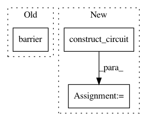

f42e9447320d18a072bdb2394eebb9ed5f04fa41,qiskit/aqua/algorithms/education/simon.py,Simon,construct_circuit,#Simon#Any#,61
Before Change
// oracle circuit
qc_oracle = self._oracle.circuit
qc_oracle.barrier()
// postoracle circuit
qc_postoracle = QuantumCircuit(
self._oracle.variable_register,
After Change
if self._circuit is not None:
return self._circuit
oracle = self._oracle.construct_circuit()
self._circuit = QuantumCircuit(*oracle.qregs)
// preoracle hadamard gates
self._circuit.h(self._oracle.variable_register)
In pattern: SUPERPATTERN
Frequency: 3
Non-data size: 3
Instances
Project Name: Qiskit/qiskit-aqua
Commit Name: f42e9447320d18a072bdb2394eebb9ed5f04fa41
Time: 2021-03-31
Author: gaconju@gmail.com
File Name: qiskit/aqua/algorithms/education/simon.py
Class Name: Simon
Method Name: construct_circuit
Project Name: Qiskit/qiskit-aqua
Commit Name: 419c5228433c57eda6b324780369c03039781e95
Time: 2019-04-30
Author: shaohan.hu@ibm.com
File Name: qiskit/aqua/algorithms/single_sample/qpe/qpe.py
Class Name: QPE
Method Name: _compute_energy
Project Name: Qiskit/qiskit-aqua
Commit Name: f0cf18a70d896f74f70f24a9a53fa7db7201951a
Time: 2019-04-30
Author: shaohan.hu@ibm.com
File Name: qiskit/aqua/algorithms/single_sample/iterative_qpe/iqpe.py
Class Name: IQPE
Method Name: _estimate_phase_iteratively